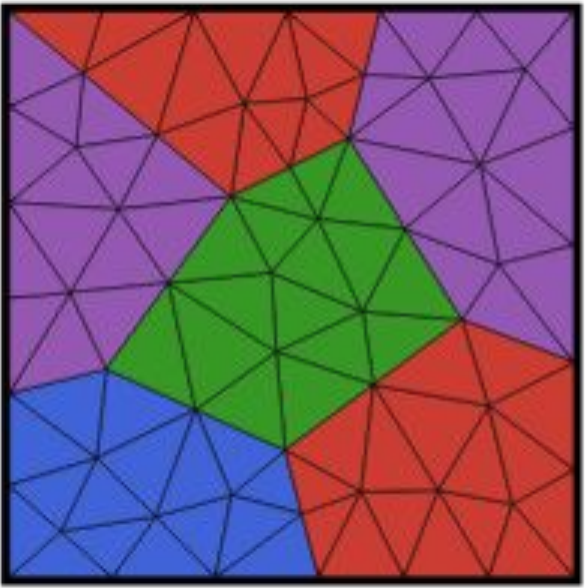
Marin Lauber, Viola Bini & Mathias Peirlinck
Delft University of Technology
A thin, curved plate structure shaped to transmit applied forces by compressive, tensile, and shear stresses that act in the plane of the surface (Encyclopedia Britannica)
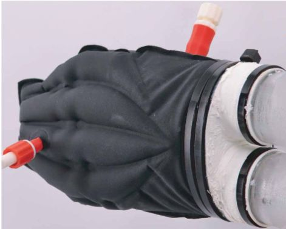
caveat: requires C¹ continuity (FerriteIGA.jl)
caveat: 5 degrees of freedom (:u; :θ)
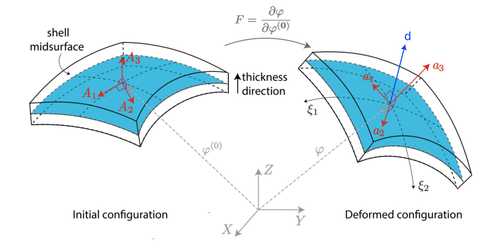
The “compressive, tensile, and shear stresses” part
and the strains (function of surface measures)
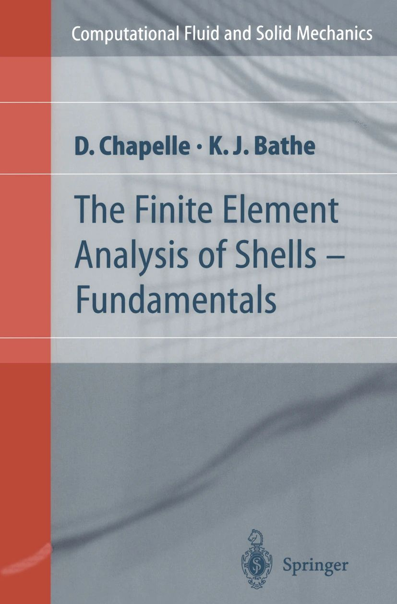
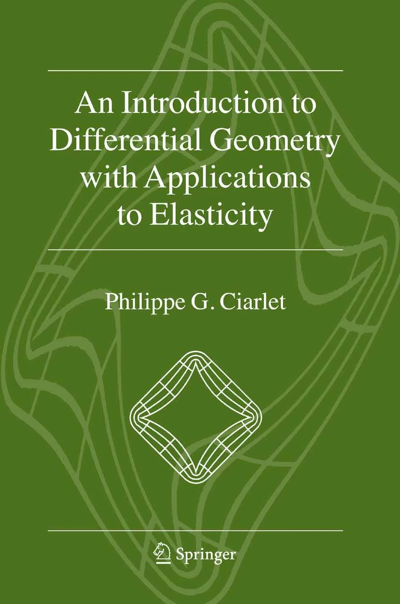
reinit! Updates these local measures of the shell
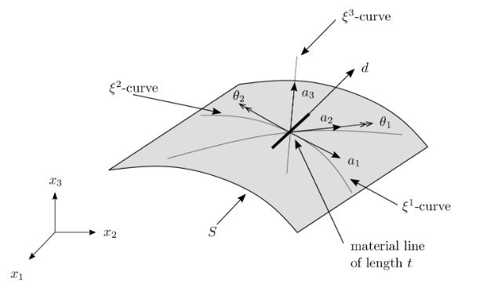
struct ShellCellValues{QR, IPG, IPS, T<:AbstractFloat} <: AbstractCellValues
# quadrature rule and interpolation spaces
qr :: QR
ip_geo :: IPG
ip_shape :: IPS
# same as CellValues
N, dNdξ, d2Ndξ2, detJdV :: Various{T}
# additional fields for shells
A₁, A₂, A₁₁, A₁₂, A₂₂ :: Vector{Vec{3, T}}
G₃, T₁, T₂ :: Vector{Vec{3, T}}
# local measure of the shell
A_metric :: Vector{SymmetricTensor{2, 2, T, 3}}
B :: Vector{SymmetricTensor{2, 2, T, 3}}
# local frame
G₃_elem, T₁_elem, T₂_elem :: Vector{Vec{3, T}}
# shear locking treatment
mitc :: AbstractMITC
endmitc: shear interpolation to ensure correct asymptotic behaviour of thick shells as t/L -> 0 (the thin part)
function energy_RM(uₑ::Vector{T}, scv::ShellCellValues, mat) where T
W = zero(T)
# loop over quadrature points
for qp in 1:getnquadpoints(scv)
# compute covariant basis, director field, curvature tensor, and shear strains
a₁, a₂ = covariant_basis(scv, qp, uₑ)
d, d₁, d₂ = director_field(scv, qp, uₑ)
κ = curvature_tensor(a₁, a₂, d₁, d₂, scv.B[qp])
γ₁, γ₂ = shear_strains(a₁, a₂, d, qp, scv.mitc)
# compute the reference director field
d₀ = reference_director(scv, qp)
# compute the covariant metric tensor
c_ms = SymmetricTensor{2,2,T}((dot(a₁,a₁), dot(a₁,a₂), dot(a₂,a₂)))
# compute the membrane stress and tangent, bending stiffness, and shear stiffness
N, _ = membrane_stress_and_tangent(mat, c_ms, scv.A_metric[qp])
D, Cs = bending_and_shear_stiffness(mat, c_ms, scv.A_metric[qp])
E = (c_ms - scv.A_metric[qp]) / 2
# compute the energy contribution at this quadrature point
W += 0.5*(N ⊡ E) + 0.5*(κ ⊡ D ⊡ κ) + 0.5*(Cs[1,1]*γ₁^2 + 2*Cs[1,2]*γ₁*γ₂ + Cs[2,2]*γ₂^2)
end
return W
end"""
residuals_RM_FD!(re, scv, u_e, mat)
Reissner-Mindlin total residual (membrane + bending + shear) via ForwardDiff.gradient of `energy_RM`.
`u_e` is a flat vector of length 5·`n_nodes`.
"""
function residuals_RM_FD!(re, scv, u_e, mat)
re .+= ForwardDiff.gradient(u -> energy_RM(u, scv, mat), u_e)
end
"""
tangent_RM_FD!(ke, scv, u_e, mat)
Reissner-Mindlin total tangent (membrane + bending + shear) via ForwardDiff.hessian of `energy_RM`.
`u_e` is a flat vector of length 5·`n_nodes`.
"""
function tangent_RM_FD!(ke, scv, u_e, mat)
ke .+= ForwardDiff.hessian(u -> energy_RM(u, scv, mat), u_e)
endExplicit version for fast and allocation-free version
linear_elasticity.jl case into a linear_elastic_shell.jl
linear_elasticity.jl
using Ferrite, FerriteGmsh
# ...
grid = togrid(logo_mesh)
# ...
ip = Lagrange{RefTriangle,1}()^dim
# ...
cellvalues = CellValues(qr, ip)
# ...
facetvalues = FacetValues(...)
# ...
C = gradient(...)
# ...
assemble_cell!(...); assemble_global!(...)
# ...
assemble_external_forces!(...)
# ...linear_elastic_shell.jl
using FerriteShells, FerriteGmsh
# ...
grid = shell_grid(togrid(logo_mesh))
# ...
ip = Lagrange{RefTriangle,1}()
# ...
scv = ShellCellValues(qr, ip, ip)
# ...
# (not needed)
# ...
mat = LinearElastic(Emod, ν, thickness)
# ...
assemble_shell!(K, r, dh, scv, u, mat)
# ...
assemble_traction!(f_ext, dh, facetset, ip, fqr, traction)
# ...function assemble_global!(K, dh, cellvalues, C)
# Allocate the element stiffness matrix
n_basefuncs = getnbasefunctions(cellvalues)
ke = zeros(n_basefuncs, n_basefuncs)
# Create an assembler
assembler = start_assemble(K)
# Loop over all cells
for cell in CellIterator(dh)
# Update the shape function gradients based on the cell coordinates
reinit!(cellvalues, cell)
# Reset the element stiffness matrix
fill!(ke, 0.0)
# Compute element contribution
for q_point in 1:getnquadpoints(cellvalues)
# Get the integration weight for the quadrature point
dΩ = getdetJdV(cellvalues, q_point)
for i in 1:getnbasefunctions(cellvalues)
# Gradient of the test function
∇Nᵢ = shape_gradient(cellvalues, q_point, i)
for j in 1:getnbasefunctions(cellvalues)
# Symmetric gradient of the trial function
∇ˢʸᵐNⱼ = shape_symmetric_gradient(cellvalues, q_point, j)
ke[i, j] += (∇Nᵢ ⊡ C ⊡ ∇ˢʸᵐNⱼ) * dΩ
end
end
end
# Assemble ke into K
assemble!(assembler, celldofs(cell), ke)
end
end# shell assembly function
function assemble_shell!(K, r, dh, scv, u, mat)
# number of degrees of freedom per element
n = ndofs_per_cell(dh)
ke = zeros(n, n)
re = zeros(n)
# prepare for assembly
assembler = start_assemble(K, r)
for cell in CellIterator(dh)
# fill with zeros
fill!(ke, 0.0); fill!(re, 0.0)
# prepares reference geometry
reinit!(scv, cell)
# extract element displacement vector
u_e = u[shelldofs(cell)]
# assemble residual
membrane_residuals_RM!(re, scv, u_e, mat)
bending_residuals_RM!(re, scv, u_e, mat)
# assemble tangent
membrane_tangent_RM!(ke, scv, u_e, mat)
bending_tangent_RM!(ke, scv, u_e, mat)
# assemble into global system
assemble!(assembler, shelldofs(cell), ke, re)
end
endlinear_elasticity.jl case into a linear_elastic_shell.jl
Note: plane strain vs plane stress
Lagrange{RefQuadrilateral, 1} – Newton-Raphson solver with Pseudo-Transient Continuation (PTC) to traverse the unstable equilibrium path
Top edge sheared with uy = 0.05·t and ux = 3·(t−1)·x/380.
Lagrange{RefQuadrilateral, 2, MITC9} with Newton-Raphson and HHT-α time integration.
Special thanks to:
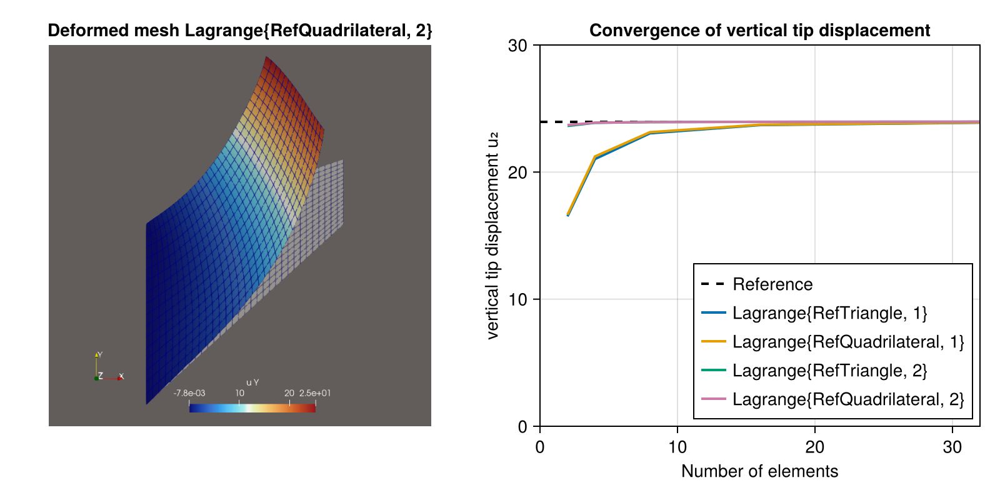
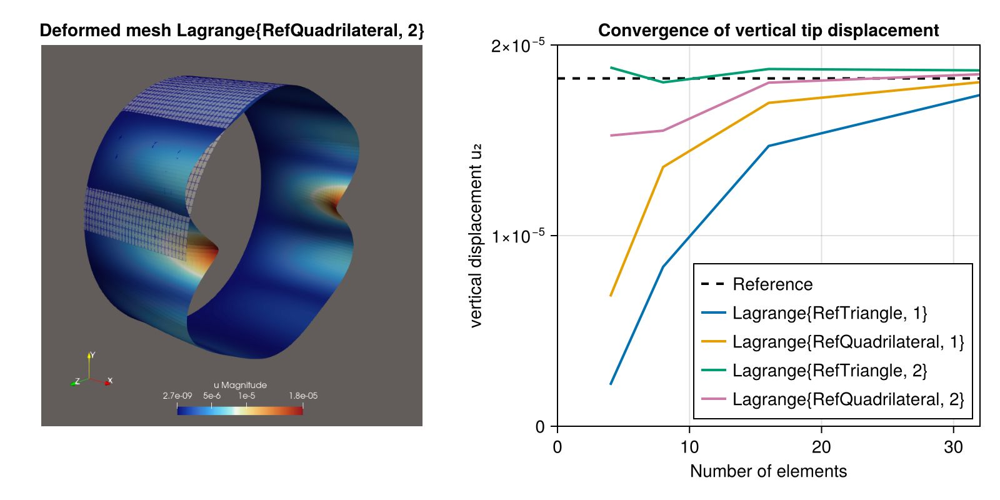
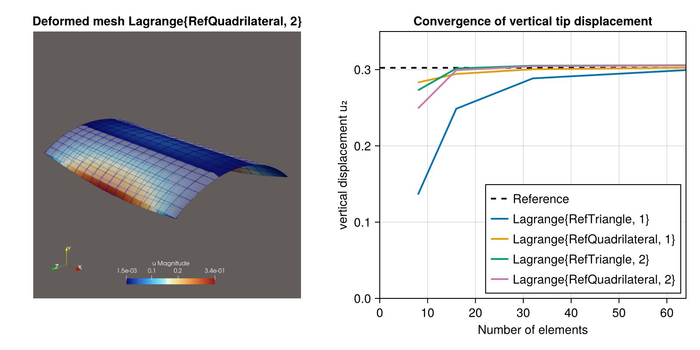
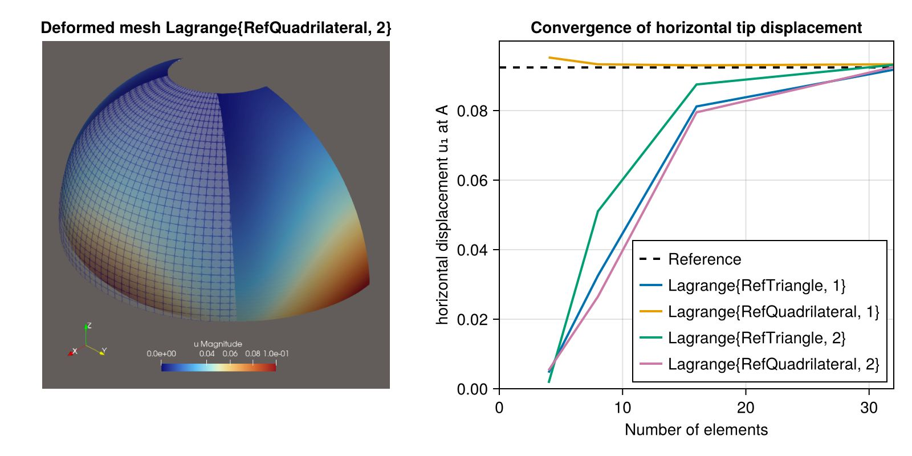
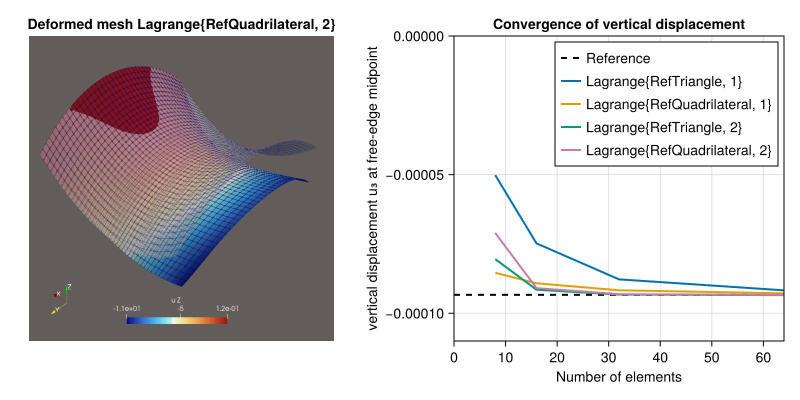
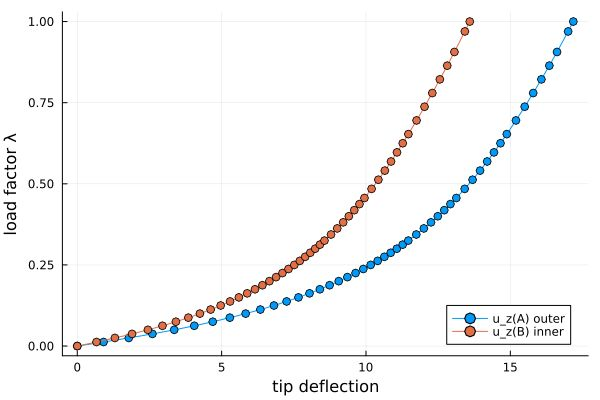
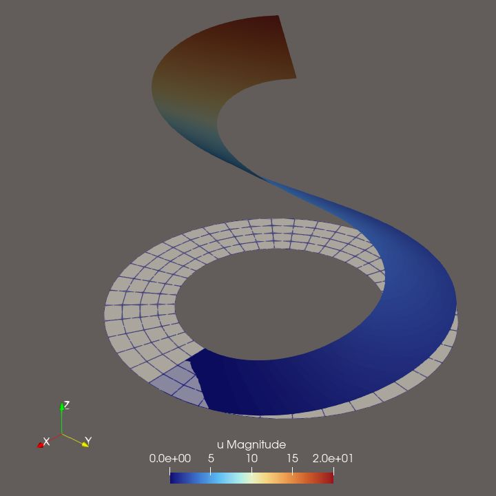
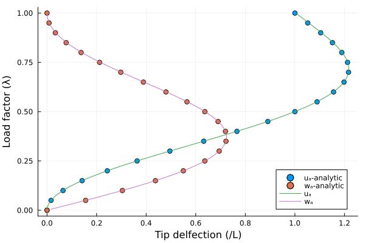
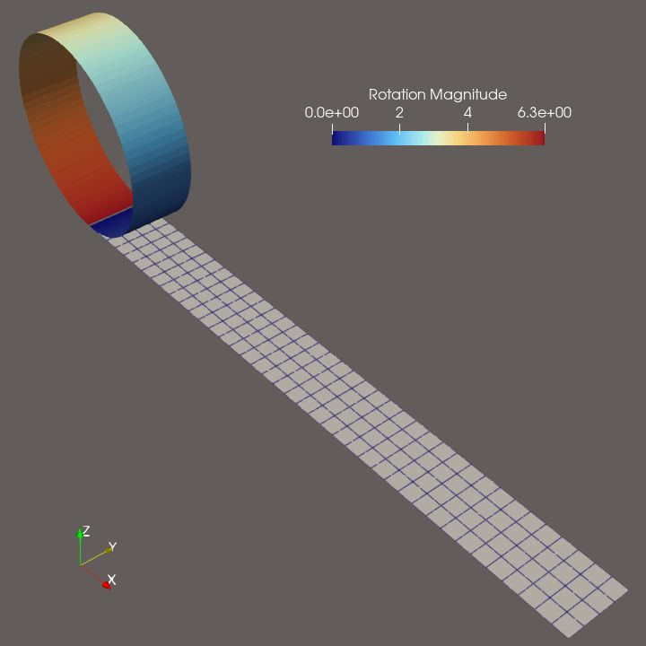
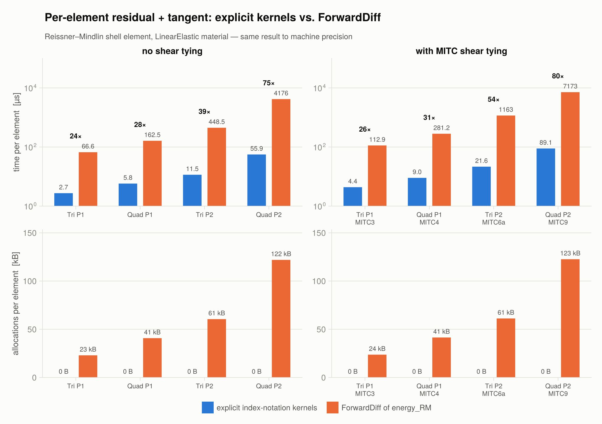
Initially curved geometries require a NodeFrames in the ShellCellValues , which goes into reinit!
See the pinched cylinder
"""
NodeFrames
Per-node area-weighted averaged director frames for a shell mesh. Eliminates the
O(h/R) inter-element frame inconsistency that occurs when adjacent curved-shell
elements each derive their own centroid frame.
Construct via `NodeFrames(grid, ip_geo)`. Pass to `reinit!(scv, x, nf, node_ids)`
instead of the plain `reinit!(scv, x)` to activate per-node frames.
For flat shells the result is identical to the centroid-frame approach.
"""
struct NodeFrames
G₃ :: Vector{Vec{3,Float64}}
T₁ :: Vector{Vec{3,Float64}}
T₂ :: Vector{Vec{3,Float64}}
end